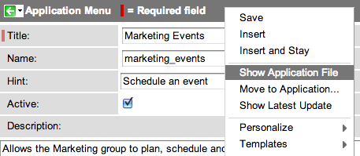
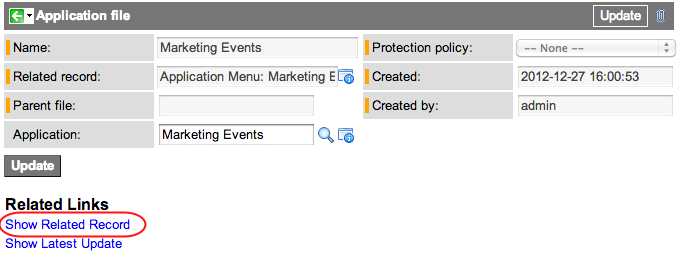

Application Files - Versions Prior to Fuji
Contents
1 Overview
The Application File [sys_app_file] table is the parent table for all tables that contain configuration records. It provides a series of standard fields that define the attributes for a configuration record. Tables that contain configuration records extend the Application File table. For example, the Business Rule [sys_script] table extends the Application File table.
Application files are not created explicitly. Whenever a configuration record is created or modified, its associated application file is automatically created or modified. An application file is programmatically kept in sync with the record it describes, and most configuration tables do not have a direct reference to the application file table. By default, only Applications [sys_app] and Tables [sys_db_object] have an explicit reference field to the Application File [sys_app_file] table.
The system also tracks configuration records in update sets. Whenever you change an application file record or its related record, the system adds a corresponding record in the Customer Updates [sys_update_xml] table. The system tracks and transfers the application file record in a single update record, ensuring that a record and its application file are kept in sync when transferring applications between instances.
Administrators can:
- Show the application file record for configuration records.
- Protect application files from changes during upgrades.
- Assign configuration records to an application.
- Restore deleted configuration records.
- View parent-child relationships between configuration records.
| |
Note: If you are using the Fuji or later version of the ServiceNow platform, see current information in Application Files. |
2 Showing Application File Records
To view the attributes for a configuration record:
- Navigate to the form view of the configuration record. For example, navigate to System Definition > Business Rules and select a business rule for the Incident table.
- Right-click the form header and select Show Application File.
- Show File Properties
- The Application File table provides the standard fields that define the attributes for the configuration record (see table).
- To return to the configuration record view, click the Show Related Record related link.
- Sample application file record
- You can also navigate between a customer update record, the file properties view, and the configuration record view. See Navigating Updated Records.
{kind=link}
{kind=link}
| Field | Description |
|---|---|
| Name | Display name for the related configuration record. |
| Related record | Reference to the configuration record. |
| Parent file | Reference to the parent application file, if one exists. |
| Application | Application that contains the application file. |
| Protection policy | Policy preventing customization of certain base system code. See Protecting Application Files. |
| Created | Creation date of the related record. |
| Created by | User who created the related record. |
| Additional fields on the list view: | |
| Source Table | Table containing the related record. |
| Updated | Last update date for the application file or related record. |
| Updated by | User who last updated the application file or related record. |
| Fields that can be added by configuring the form: | |
| Replace on upgrade | Flag that indicates whether the related record will be upgraded to the next software version (starting with the Dublin release). The value is automatically set to false when you change non-excluded fields on the related record. To overwrite changes during the next software upgrade, change the value to true. See Overwriting Customizations During Upgrades. |
| Customer update | Flag that indicates whether the related record has customer changes (starting with the Dublin release). The value is automatically set to true when you change any field on the related record. |
| Related lists on the form view: | |
| Related Record Versions | Version records for the related configuration record (starting with the Dublin release). A version record is every time a user changes the related record. Use this list to compare versions of the configuration record or to revert to a previous version. See Versions. |
| Related Record Updates | Local update records for the related configuration record (starting with the Dublin release). An update record is created for the most recent change to the related record in a given update set. See Update Sets. |
From the application file record, you can access related configuration records.
- To navigate to the configuration record, click the Show Related Record related link.
- To navigate to the parent record of the current configuration record, click the Show Parent Record related link.
- To see child configuration records, such as a field label's translations, scroll down to the Descendants related list.
Navigating from a list of application files to a record works differently from most lists.
- To open the application file record itself, click the reference icon beside the row.
- To open the related record, click the link in the first column.
{kind=link}
For example, use any of these application file lists to help build and manage applications:
- Navigate to System Definition > Application Files to see a list of all application files on the instance.
- Example use: filter all application files by application, type of record (source table), user who created it, or when it was last updated.
- Navigate to System Definition > Deleted Application Files to see a list of all application files for which the related record is deleted.
- Example use: restore an application or table. See Restoring Deleted Records.
- Open an application record and scroll down to the All Files related list to see a list of all application files contained in the application.
- Example use: run fix scripts after you transfer an application to another instance. See Running Fix Scripts.
2.3 Protecting Application Files
Some application code shipped with ServiceNow requires special protection. When an application file has a Read-only protection policy, nobody can modify the related record. Only a ServiceNow employee can alter the protection policy and then modify the application file or its related record. A ServiceNow employee cannot make any changes without changing the policy designation first.
To prevent customizations from being overwritten by system upgrades, the upgrade process automatically skips changes to customer-updated records. If you modify an application file or related record that is later designated as Read-only in an upgrade, the application file maintains the default protection policy of Write. You keep the existing modifications and can continue modifying the records.
2.4 Assigning Application Files to Applications
Application developers can use an application file record to assign a particular configuration record to an application. Assign application files to an application to:
- Understand who owns and who changes application records and code.
- Detect conflicts between applications under development.
- Publish the current version of each application file to an update set when development is complete.
For more information about assigning application files to an application, see Managing Applications - Versions Prior to Fuji.
3 Viewing Relationships Between Application Files
In addition to defining which tables contain configuration records, the Application File Types table also defines parent-child relationships between configuration records. The system uses this structure to keep application files that normally belong together in the same application by:
- Notifying developers when a conflict is detected between applications under development. See Resolving Conflicts.
- Moving an application file with its descendants. See Moving Application Files to Applications Manually.
| |
Warning: The Application File Types table provides system functionality and should not be modified. |
For example, consider the parent-child relationships for a UI policy.
- The UI policy is a child of the table.
- UI policy actions are children of the UI policy.
- UI policy actions have a parent UI policy and a grandparent table.
- The UI policy actions and the UI policy are all descendants of the table.
{kind=link}